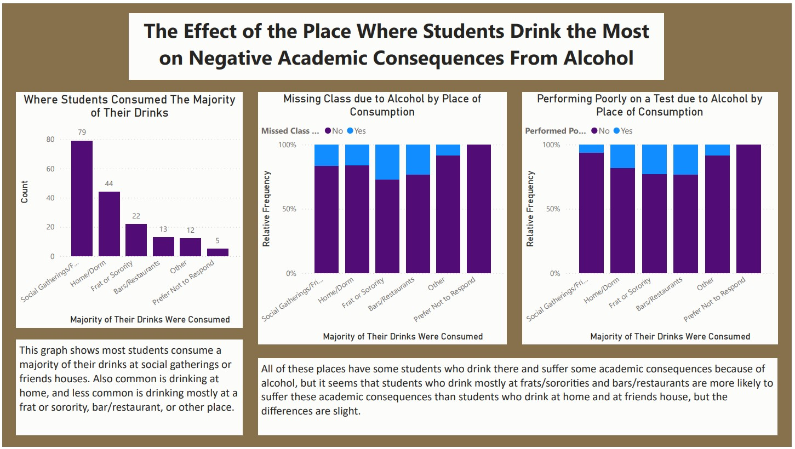
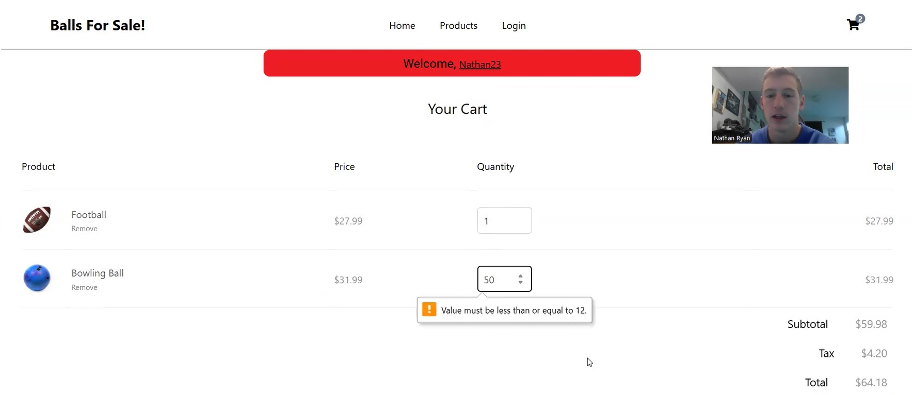
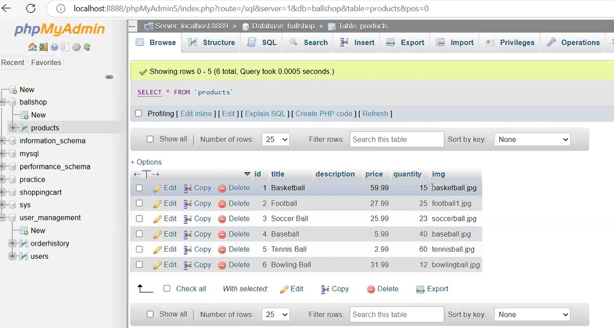

Projects Page
Here's some examples of projects I've completed.
NFL Positional Spending
In football, there are many different position groups that each have different responsibilities in the game. Some positions are thought to be more valuable to a team than others, which in the NFL can be sometimes reflected in players' salaries. To discover if certain positions should be paid more than others to maximize team success, a dataset that included several measures of team success and how the teams have distributed salaries across position groups was examined.
When looking more broadly at offensive vs defensive players, there was no significant correlation between the percentage of revenue teams spend on Offense or Defense and win percentage. However, over the last 11 years, every team that has won the Super Bowl has paid their offensive players in total more than their defensive players. Narrowing in on specific position groups, a multiple stepwise regression model revealed that only quarterbacks and edge rushers salaries correlated with team win percentage. Both positions were positively correlated with team win percentage. Next, a stepwise logistic regression model revealed that only the percent of total salary spent on tight ends was correlated with Super Bowl winning teams, where it was also positively correlated. Lastly, a multiple stepwise regression to determine rushing success showed that only offensive linemen salaries correlated with more rushing success.
To visit the google site for more information/results, click on the scatter plot below.

Alcohol's Effect on Academics
Using data from a 2022 Survey of Truman Students, I created a dashboard with explanations detailing the effect of students' alcohol consumption on academic success. Using Power BI, I created several graphs exploring different variables related to academic success, frequency of drinking, and where drinking was occuring. For this analysis, I came up with a research question, chose variables to use for the analysis, cleaned and organized the data, and created visualizations to display the results. Of Truman students who drink, I found that males and students over 21 suffer from more academic consequences from alcohol than females and students under 21. I also discovered that students who drink weekly are more at risk to suffer academically from alcohol than those who drink less often.
To view the rest of the dashboard, click on the graphs below.

Custom Shopping Website

I created a website with a functioning shopping cart feature using php, css, and js files. I used MySQL to store the shopping data and login data to the website. Users could create an account, then needed to log in to make any purchases. Once a purchase was made, their login and purchase information was stored in the MySQL database. This site sold sports balls, and although it didn't collect payment or actually ship items to users, it had all the other functions of a website with a shopping cart.
